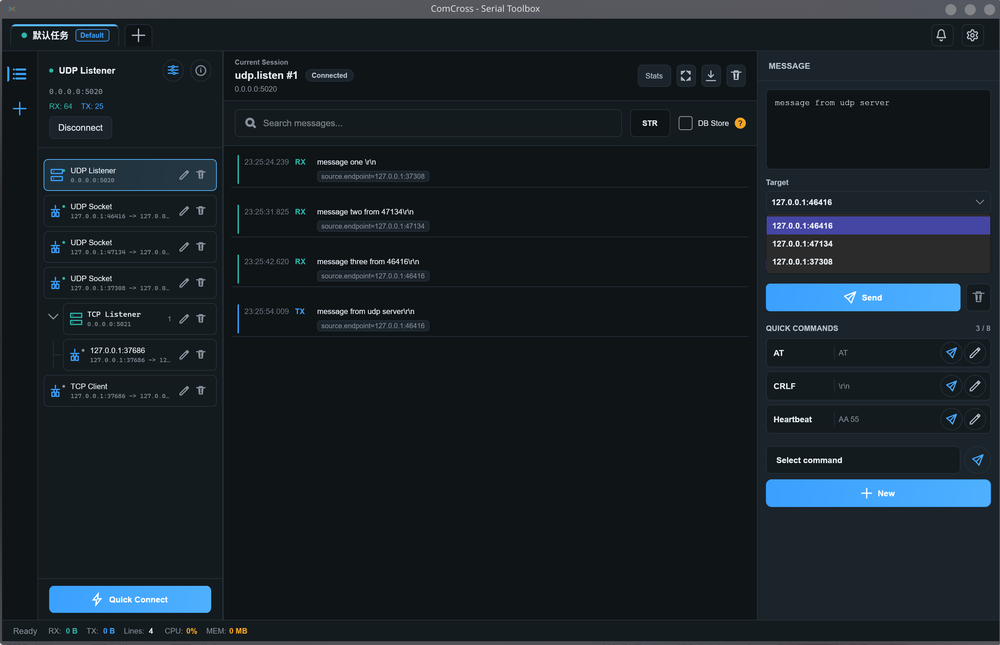
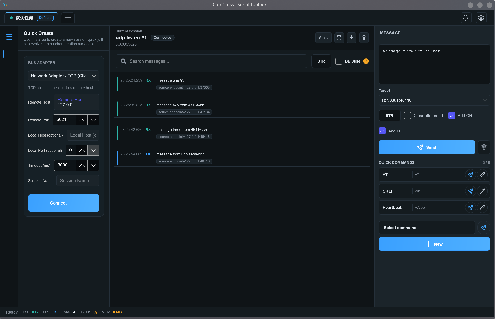
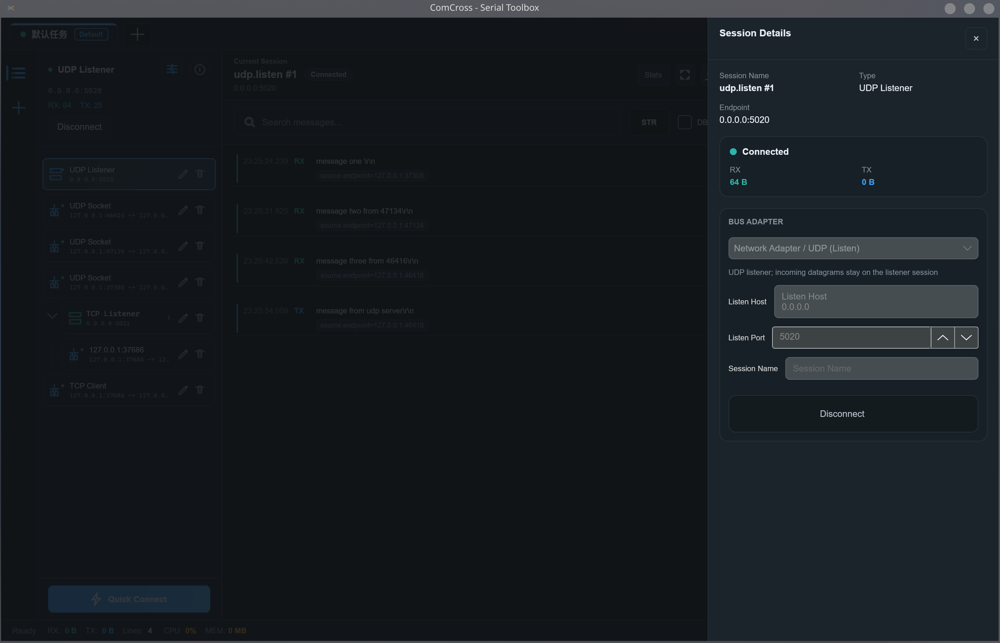

Bus adapters
Use Serial, TCP client/server, and UDP socket/listener adapters through a common workflow.
Serial, TCP, and UDP workflows
A cross-platform embedded communication toolbox for connecting, inspecting, and sending messages through plugin-isolated bus adapters.

What it does
ComCross keeps transport adapters isolated while the desktop shell focuses on sessions, message flow, quick commands, and inspection.
Use Serial, TCP client/server, and UDP socket/listener adapters through a common workflow.
Organize connections as sessions, switch between workloads, and track RX/TX counters.
Inspect searchable RX/TX messages with bounded attributes supplied by plugins.
Store common payloads and send them without leaving the active communication surface.


Download
Official packages are published from GitHub Releases. The support matrix below describes the current baseline target.
Choose a platform package, or let the site recommend one for this device.
| System | Minimum | Architecture | Package |
|---|---|---|---|
| Windows | 10 22H2 / 11 22H2 | x64, ARM64 | MSI |
| Ubuntu | 22.04 LTS | x64, ARM64 | DEB, AppImage |
| Debian | 12 | x64, ARM64 | DEB, AppImage |
| Fedora | 40 | x64 | RPM, AppImage |
ComCross does not currently provide official macOS packages. Other Linux distributions may work, but they are outside the formal support commitment.
Architecture
Transport plugins own bus-specific behavior. Core and Shell consume public facts for lifecycle, persistence, rendering, and user workflows.
Produce transport facts, metadata, topology, and plugin-owned UI state.
Coordinates plugin runtimes, sessions, persistence, IPC, and message flow.
Renders workflows without inferring plugin-private transport semantics.
Planned for v0.6.0
The next development scope focuses on derived protocol data while preserving raw messages as the source of truth.
Bounded CPDL profiles for frame rules, message matching, field decoding, and validation.
Cancellable parsing that produces searchable derived fields and structured warnings.
Append-first storage, windowed loading, and search with progress and navigation.
Initial charts for throughput, counts, payload size, warnings, and decoded numeric fields.
Documentation
Use the repository documentation for implementation, release, and compatibility details.